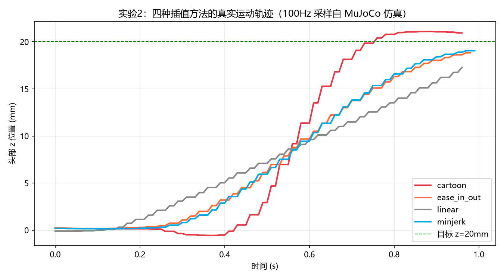

Hugging Face 发布、一天卖爆 50 万美元的开源桌面机器人 —— 没有真机也能玩
pollen-robotics/reachy_mini · 软件 Apache-2.0 · 实验环境：Windows 11 + MuJoCo 仿真
Reachy Mini 是一台 28 厘米高、1.5 公斤重、会"做表情"的开源桌面机器人，售价 Lite 版 299 美元 / Wireless 版 449 美元，以 DIY 套件出售（组装约 2~3 小时）。它由 Hugging Face 收购的法国公司 Pollen Robotics 开发，定位是给 AI 开发者和爱好者的"具身 AI 开发平台"：身上有摄像头、麦克风阵列和扬声器，头部能 6 自由度运动，两根天线还能当按钮按。
| 版本 | 计算 | 连接 | 适合谁 |
|---|---|---|---|
| Lite（$299） | 你的电脑 | USB-C（仅数据） | 开发者，算力无限 |
| Wireless（$449） | 机载树莓派 CM4 + 电池 | WiFi | 随处摆，算力有限 |
| Simulation（免费） | 你的电脑 | localhost | 没买机器人也能玩（本指南路线） |
市面上很多"开源"只公开一张外观图。Reachy Mini 开源了四层东西：
| 层 | 内容 | 许可证 |
|---|---|---|
| 硬件结构 | 3D 打印图纸、舵机选型、电路连接、BOM 清单 | CC BY-SA-NC（可改可印，禁商用） |
| 驱动/守护进程 | 电机控制、安全检查、传感器读写 | Apache-2.0（随便商用） |
| SDK 与应用 | Python SDK、JS SDK、示例、对话 App | |
| 仿真环境 | MuJoCo 模型 + 场景，行为与真机一致 | Apache-2.0 |
也就是说：你可以白嫖它的全套设计自己 3D 打印一台，也可以直接跑它的代码——这正是它刷屏的原因：把"具身 AI 玩具"的价格打到一台手机钱。
普通机械臂是"一串关节手拉手"（串联），而 Reachy Mini 的头是上下两个圆盘之间用 6 根可伸缩推杆连起来：每根推杆长度一变，上盘（头）就同时产生前后/左右/上下平移 + 俯仰/偏航/侧倾 6 种运动。这叫 Stewart 并联平台，飞行模拟器也是这个结构。
好处是又稳又准（6 杆共担重量），坏处是数学上"想要头的某个姿态，6 根杆各伸多长"要用逆运动学解——这部分 SDK 已经替你做好了（参见知识库 [[逆运动学IK与CCD迭代]]，工程上是解析解而非迭代）。
秘密特别朴素：表情 = 一串关键姿态 + 每段用多慢、用什么"性格"的插值曲线过渡。例如"害羞"= 头下沉 10mm、侧倾 20°、两根天线耷拉下去，用 ease_in_out 慢慢扭过去。这和网页动画里的补间动画是同一套数学（知识库 [[补间动画与缓动函数]]），只是这次被搬到了物理机器人上：
| 插值方法 | 曲线性格 | 像什么 |
|---|---|---|
linear | 匀速，启动刹车都生硬 | 电梯 |
minjerk | 最小抖动，生物运动的自然曲线（公式 10t³−15t⁴+6t⁵） | 人抬手 |
ease_in_out | 慢起步慢停车，中段加速 | 轿车起步 |
cartoon | 会过冲：冲过头再回弹，故意"Q 弹" | 橡皮筋/卡通 |
Reachy Mini 官网那些"活灵活现"的动图，本质就是工程师精心编排的情感运动序列——本指南实验 3 就带你手写一段。
用的是客户端-服务器架构（与知识库 [[机器人守护进程架构]] 同一思想）：一个常驻后台的 daemon 独占硬件（真机走 USB/串口，仿真走 MuJoCo），对外在 8000 端口暴露 REST + WebSocket；你的 Python 代码只是通过网络发指令的"客户端"。
两个运动指令要分清：goto_target() 是"平滑地走到那里"（阻塞式，适合 ≥0.5 秒的手势）；set_target() 是"现在！立刻！到这！"（非阻塞，适合 10Hz 以上的实时跟踪环，比如视觉追踪）。
路线一（本指南采用）：reachy-mini-daemon --sim 直接在电脑里启动 MuJoCo 物理仿真，行为与真机完全一致（知识库 [[Sim2Real与MuJoCo仿真]] 的同款思路），SDK 代码零改动。
路线二：写一个静态网页，通过 WebRTC（浏览器自带的实时音视频+数据通道）经 HF 的中央信令服务器直连机器人——别人点一个链接就能"远程玩你的机器人"，零安装。所有应用放在 Hugging Face Spaces 上形成"机器人应用商店"（对话、收音机、手势追踪……50+ 个），一键安装。
再往上一层就是"Agentic 机器人"：官方对话 App 让 LLM 通过工具调用（知识库 [[LLM工具调用]]）驱动实体机器人——转头、记人名、搜网页。这也是它被称为"AI 时代的乐高"的原因。
Hugging Face 正在布局一整条开源机器人产品线，Reachy Mini 是其中"人人都能买得起"的那档：
| 项目 | 是什么 | 关系 |
|---|---|---|
| LeRobot | 机器人学习训练框架（数据/模型/部署） | "大脑训练场"，仓库 huggingface/lerobot |
| microduck | 开源机器鸭（知识库已学） | 同门小辈，同为 HF 系 |
| Reachy Mini | 开源表情桌面机器人（本项目） | 面向大众开发者的"身体" |
| HopeJR | 全尺寸 66 自由度人形（约 $3000） | 同门大哥 |
以下每一步都已在 Windows 11 + Python 3.12 上真实执行（Python 3.14 装不上 MuJoCo，是实测踩过的坑）。
# 注意：必须用 Python 3.12/3.13（mujoco 暂无 3.14 的预编译轮子）
python -m venv venv
venv\Scripts\python -m pip install "reachy-mini[mujoco]" matplotlib✅ 预期结果：Successfully installed reachy-mini-... mujoco-...
venv\Scripts\reachy-mini-daemon --sim --headless目的：在电脑里"虚拟出一台 Lite 版机器人"。--headless 不开 3D 窗口，适合远程/后台。
✅ 预期结果：日志出现 daemon 已监听 localhost:8000 字样，进程不退出。
venv\Scripts\python exercise\exp1_hello_sim.py✅ 真实输出（2026-10-03 实测）：
== 连接仿真守护进程 (localhost) ==
[OK] 已连接仿真 Reachy Mini
[状态] 头部关节数: 7, 天线关节数: 2
[状态] 天线当前角度(rad): [-0.175, 0.175]
[状态] 头部当前位置 xyz(mm): [-0.0, 0.0, -0.1]
-> 抬头 20mm + 侧倾 15 度
-> 天线摆动
-> 回休息位
[收尾] 头部位置 xyz(mm): [-0.1, 0.3, -0.0]
[OK] 实验1完成注意"头部关节数: 7"——6 根 Stewart 推杆 + 1 个身体旋转轴，和 Q3 的机械结构对上了。
做法：对每种插值发一个"抬头 20mm"指令，同时在另一个线程以 100Hz 采样头部真实位置，量化"到达时间、最大速度、过冲量"。
venv\Scripts\python exercise\exp2_interpolation_compare.py✅ 真实结果（100Hz 采样自 MuJoCo 仿真）：
| 方法 | 到达时间(s) | 最大速度(mm/s) | 过冲量(mm) | 终点误差(mm) |
|---|---|---|---|---|
| linear | 0.96 | 57.4 | -2.72（始终慢半拍） | 2.72 |
| minjerk | 0.97 | 100.3 | -0.94 | 0.94 |
| ease_in_out | 0.98 | 91.9 | -1.16 | 1.16 |
| cartoon | 0.71 | 228.9（4 倍速！） | +1.09（唯一过冲） | 0.94 |
数字里藏着两条动画铁律：cartoon 是唯一直接过冲目标的（冲到 21.09mm 再回弹），而且起步前还先反向下沉了 0.56mm"蓄力"——这就是卡通动画里的 anticipation（预期动作）技巧，机器人版也一样灵。

venv\Scripts\python exercise\exp3_emotion_sequence.py✅ 真实输出：
== 表情序列播放 ==
-> 好奇抬头 (时长 0.8s, 插值 minjerk)
-> 害羞侧倾 (时长 0.8s, 插值 ease_in_out)
-> 开心转圈 (时长 0.6s, 插值 cartoon)
-> 回正 (时长 1.0s, 插值 minjerk)
[OK] 实验3完成这个"关键姿态 + 时长 + 插值"的三元组列表，就是官方 emotions library 的最小内核——做表情机器人，本质是在编排动作 keyframe。
media_backend="no_media"；③ daemon 必须先启动，SDK 连的是 localhost:8000；④ pitch/roll 软限位 ±40°，超了会被自动夹紧。